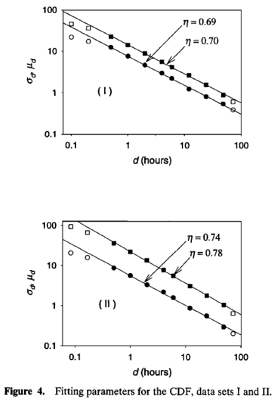

Desagregação temporal das chuvas intensas
Desagregação Temporal
As relações Intensidade–Duração–Frequência (IDF) são centrais na engenharia de recursos hídricos, pois orientam o dimensionamento seguro e econômico de drenagem, bueiros, pontes e barragens. Em termos simples, uma curva IDF define \((i=f(d,T)\), relacionando a intensidade média máxima \(i\), a duração \(d\) e a frequência (período de retorno \(T\), ou probabilidade anual de excedência). A partir dessas curvas, estimam-se as chuvas de projeto, isto é, eventos de magnitude e raridade específicas que a infraestrutura deve suportar (Vyver 2018).
É útil distinguir IDF (intensidades), DDF (profundidade–duração–frequência) e hietogramas de projeto. As curvas IDF/DDF fornecem valores agregados por duração, mas não especificam o padrão temporal intradiário, que geralmente é obtido por desagregação ou por perfis de projeto. Na prática, as IDFs são frequentemente ajustadas com Distribuição Generalizada de Valores Extremos (GEV) ou com a distribuição de Gumbel sob hipótese de estacionariedade (Baldassarre, Brath, and Montanari 2006; Courty et al. 2019; Yeo, Nguyen, and Kpodonu 2021).
Um desafio recorrente é a assimetria de resolução. Projetos podem exigir intensidades subdiárias (minutos–horas), enquanto grande parte das observações históricas está em escala diária. Além disso, as redes pluviográficas costumam ser esparsas e curtas, o que dificulta a caracterização de picos intradiários sem incorrer em subdimensionamento ou sobrecustos.
A desagregação temporal é a principal resposta a essa assimetria. O objetivo não é apenas “quebrar” um total diário em partes, mas reconstruir uma dinâmica subdiária plausível, preservando: (i) a massa diária (quando aplicável), (ii) a intermitência (sequência seco–úmido), (iii) a variabilidade intradiária e (iv) as propriedades de extremos. Em outras palavras, busca-se gerar séries subdiárias estatisticamente consistentes com a observação e adequadas ao uso em modelos hidrológicos.
Nesta revisão, organizamos as metodologias de desagregação em classes com base em seus princípios e objetivos:
Fórmulas/ajustes empíricos e regionais (equações IDF/DDF, isozonas, coeficientes)
Modelos de Processos Pontuais / geradores incondicionais (Bartlett–Lewis, Neyman–Scott, LetItRain/Hyetos)
Modelos Baseados em Invariância de Escala / Autossemelhança / Fractais.
Técnicas Não Paramétricas / Reamostragem
Modelagem Hierárquica de Extremos
Fórmulas/ajustes empíricos e regionais (equações IDF/DDF, isozonas, coeficientes)
Coeficientes empíricos
O método de desagregação por coeficientes empíricos permite converter dados de durações maiores (tipicamente diárias) para durações menores (subdiárias). O processo consiste em aplicar um fator de ajuste a um quantil (ou valor de projeto) de uma duração de referência para estimar o valor correspondente em uma duração inferior, mantendo o mesmo período de retorno \(T\) [CETESB, 1979; Abreu et al. (2022)]
No Brasil, o método das Relações de Redução de Duração Diária (RRDD) é uma das principais técnicas de desagregação de séries diárias em subdiárias. Seu funcionamento baseia-se em coeficientes de desagregação (\(CD_d\)), definidos por razões entre precipitações máximas em diferentes durações. Dado um valor de projeto diário \(P24h(T)\), obtém-se, por exemplo, o valor para \(d=1h\) por:
\[ P_d(T)=CD_d×P24h(T), d\in\{6\ \text{min},1\ \text{h},2\ \text{h},\dots\}. \tag{1}\]
A partir desses pontos, derivam-se curvas IDF/DDF completas usando a base diária [CETESB, 1979; Abreu et al. (2022)]. No contexto brasileiro, os coeficientes de desagregação mais amplamente aplicados são originalmente estabelecidos pela CETESB (1979). Eles são obtidos a partir da média de registros subdiários provenientes de pluviógrafos instalados em diversas localidades do país e, por isso, acabam sendo considerados como coeficientes gerais para todo o território nacional.
A literatura recente propõe diversas variações e aprimoramentos. Nesse contexto, Abreu et al. (2022) comparam coeficientes padrão (\(CD_{\mathrm{standard}}\) - CETESB) e coeficientes específicos (\(CD_{\mathrm{specific}}\) - estimados posto a posto). A partir deles, constroem as respectivas curvas IDFs, ajustando os parâmetros da equação IDF genérica:
\[ i(d,T) \;=\; \frac{k\, T^{a}}{(d+b)^{c}} \tag{2}\]
via Gauss–Newton sobre os pontos gerados pelos coeficientes. Para a espacialização do \(CD_{\mathrm{specific}}\) aplicam a técnica de interpolação por Ponderação do Inverso da Distância (Inverse Distance Weighting – IDW).
No Atlas Pluviométrico do Brasil (CPRM, 2013), a desagregação temporal parte dos quantis diários (máximo diário anual por ano hidrológico) e os traduz para durações subdiárias por meio de uma relação log-linear em função da duração, cujo coeficiente depende do período de retorno. Para cada posto, ajusta-se a curva de altura \(P\) (mm) como função de \(d\) (h) e \(T\) (anos):
\[P(T,d)=J\,\ln\!\Big(d+\tfrac{\alpha}{60}\Big)+K,\qquad J=A\ln T+B,\quad K=C\ln T+E\] onde \(\alpha\) (min) é um parâmetro de correção de duração que “desloca” o eixo das abscissas e lineariza o comportamento para tempos curtos. A calibração procede em dois passos encadeados: primeiro escolhe-se \(\alpha\) que maximiza a linearidade de \(P\) versus \(\ln(t+\alpha/60)\) nas durações consideradas (tipicamente separando faixas curtas e longas, quando necessário). Em seguida, estimam-se \(A,B,C,E\) (parâmetros da equação) por regressões lineares de \(J\) e \(K\) contra \(\ln T\), usando os pares \(\{P(T,d),\,d,\,T\}\) derivados dos quantis diários. A intensidade IDF resulta de \(i(T,d)=P(T,d)/d\). Essa construção garante coerência entre durações (o mesma \(\alpha\) por faixa) e suavidade ao longo de \(d\), ao mesmo tempo em que preserva a escala de retorno por meio dos termos \(J\) e \(K\). Quando os dados sugerem mudanças de regime, o Atlas permite duas faixas de duração com conjuntos de parâmetros distintos, mantendo continuidade na junção.
Isozonas
A metodologia de isozonas é uma abordagem de regionalização que se baseia no princípio de que áreas climaticamente semelhantes exibem comportamento homogêneo em relação às chuvas intensas. Proposto por Torrico (1974), o conceito é aplicado na divisão do Brasil em oito microclimas homogêneos, a partir de dados de 98 postos pluviográficos previamente analisados por Pfafstetter (1956; 1982). O estudo foca nas alturas máximas para 24h e 1h, representadas em papel de probabilidade de Hershfield e Wilson. Observa-se que, ao prolongar as semirretas das curvas de altura versus duração, elas convergiam para um mesmo ponto no eixo das ordenadas em determinadas áreas. Essas relações entre durações passaram, então, a ser utilizadas como coeficientes de desagregação, possibilitando a estimativa de precipitações em locais sem registros pluviográficos.
Décadas mais tarde, Basso et al. (2016) revisitam e atualizam o zoneamento de Torrico com base em cerca de mil equações IDF disponíveis no Brasil. Consideram apenas ajustes provenientes de pluviogramas (descartando relações gerais entre durações) e, havendo múltiplas IDFs por localidade, optam pela mais recente. O período de retorno de referência para comparação foi \(T=10\) anos, usual em macrodrenagem urbana. No processo de rezoneamento, as intensidades e as relações entre durações obtidas a partir das IDF atuais são comparadas às estimadas por Torrico (1974) com ênfase em \(r_{1(h)},24h\), apoiando-se em mapas climáticos nacionais para áreas com baixa densidade de dados e verificando a homogeneidade intra-zona por estatísticas descritivas. O resultado é um conjunto de novas isozonas e coeficientes regionais de desagregação \(r_{d(h)},24h\), para \(T=10\) anos.
Além de coeficientes e isozonas, há uma vertente importante de equações paramétricas DDF/IDF. Baldassarre et al. (2006) realizam um estudo para testar a confiabilidade de sete diferentes curvas DDF (quatro com dois parâmetros e três com três parâmetros). Essas curvas foram calibradas utilizando o método dos mínimos quadrados com dados de precipitação observados referentes a durações mais longas (1, 3, 6, 12 e 24 horas). Após a calibração, as curvas DDF são extrapoladas para estimar as profundidades de precipitação de projeto para durações mais curtas, especificamente 15, 20, 30 e 45 minutos.
Para avaliar a precisão dessas estimativas extrapoladas, elas são comparadas com os quantis de precipitação obtidos pelo ajuste direto da distribuição de Gumbel aos dados observados em cada duração. Embora a distribuição de Gumbel seja considerada um ajuste aceitável para os dados utilizados no estudo e tenha sua adequação verificada por testes de L-momentos e Kolmogorov-Smirnov, o artigo ressalta que estudos recentes apontam que a distribuição pode subestimar a profundidade de precipitação de projeto para grandes períodos de retorno. O estudo ilustra a sensibilidade à forma da equação e os riscos de extrapolar para durações curtas fora do intervalo de calibração, motivando o uso de formulações que imponham consistência entre durações quando possível (Baldassarre, Brath, and Montanari 2006).
Modelos de Processos Pontuais
A modelagem estocástica da precipitação em alta resolução temporal apoia-se, classicamente, na Teoria do Processo Pontual, que permite representar tanto a ocorrência de eventos quanto suas “posições” no tempo (e no espaço). Em particular, o Processo de Poisson é atrativo porque suas hipóteses de estacionariedade, não-multiplicidade e independência, isto é, \[P\{\text{evento em }(d,d+\Delta_d)\}\approx \lambda\,\Delta_d,\] probabilidade desprezível de múltiplas chegadas em \(\Delta_d\) e independência entre contagens em intervalos disjuntos, são compatíveis com propriedades essenciais da precipitação.
Dentro desse arcabouço, consolidam-se duas famílias: (i) modelos simples baseados em Poisson (por exemplo, Poisson Ruído Branco e Poisson de Pulsos Retangulares), que representam a chuva como uma sequência de pulsos com alturas e durações aleatórias; e (ii) processos pontuais de agrupamento, notadamente Neyman–Scott e Bartlett–Lewis, capazes de reproduzir estatísticas de primeira e segunda ordem em ampla faixa de agregações. A distinção estrutural entre os dois últimos é sutil: no Neyman–Scott as células são deslocadas do instante de origem do evento; no Bartlett–Lewis há uma célula no próprio ponto de origem do evento. Em avaliações clássicas (Denver/Boston), ambos reproduzem bem média, variância e autocorrelação, mas tendem a distorcer a proporção de tempos secos se mal calibrados (Koutsoyiannis and Onof 2001).
O modelo de Pulsos Retangulares de Bartlett–Lewis original baseia-se nas seguintes hipóteses: (1) as origens dos episódios chuvosos \(d_i\) seguem um processo de Poisson com taxa \(\lambda\); (2) dentro de cada episódio \(i\), as origens das células \(d_{ij}\) seguem um processo de Poisson com taxa \(\beta\); (3) o nascimento de células no episódio \(i\) cessa após um tempo \(v_i\) com distribuição exponencial de parâmetro \(\gamma\); (4) cada célula tem duração \(w_{ij}\) com distribuição exponencial de parâmetro \(\eta\); e (5) cada célula possui intensidade uniforme \(X_{ij}\) com distribuição especificada. Neste arcabouço, a desagregação temporal é tratada como geração estocástica em passo fino (por exemplo, horário ou sub-horário): calibra-se o modelo com estatísticas observadas em escalas mais grossas e simula-se a sequência de pulsos; ao agregar a série simulada, recuperam-se as estatísticas-alvo nas escalas de 1–24 h.
Para ampliar a flexibilidade multiescala e melhorar a representação dos períodos secos/úmidos, é proposto o Modelo de Pulso Retangular Bartlett-Lewis Modificado (MBLPRM). Na versão modificada, \(\eta\) varia aleatoriamente de episódio para episódio segundo uma distribuição Gamma com parâmetro de forma \(\alpha\) e escala \(\nu\). Em seguida, \(\beta\) e \(\gamma\) também variam de modo que as razões \(\kappa := \beta/\eta\) e \(\phi := \gamma/\eta\) permaneçam constantes. A intensidade \(X_{ij}\) costuma ser modelada como exponencial com parâmetro \(1/\mu_x\); alternativamente, pode-se adotar uma Gamma de dois parâmetros com média \(\mu_x\) e desvio-padrão \(\sigma_x\). Assim, na forma mais simplificada o modelo usa cinco parâmetros \((\lambda, \beta, \gamma, \eta, \mu_x)\) (ou, de forma equivalente, \(\lambda, \kappa, \phi, \eta, \mu_x\)), e, na versão modificada, sete parâmetros: \(\lambda, \kappa, \phi, \alpha, \nu, \mu_x, \sigma_x\).
Koutsoyiannis & Onof (2001) implementam no HYETOS uma desagregação condicionada acoplada ao processo de Bartlett–Lewis. O HYETOS é um ambiente de simulação e desagregação que, com base nesse arcabouço de pulsos retangulares, gera séries em passo fino e aplica ajustes proporcionais para conservar a soma diária e a estrutura estatística. Inclui ainda um esquema de repetições e um otimizador evolutionary annealing–simplex com critérios multiescala. A versão em R, HyetosR, está disponível no CRAN.
O procedimento inicia gerando, via Bartlett–Lewis, uma sequência longa o suficiente para conter um bloco de \(𝐿\) dias úmidos seguido por um ou mais dias secos. Identificada essa sequência, são geradas as intensidades das células e computados os totais diários sintéticos correspondentes. A aceitação do bloco é decidida por uma medida de distância entre os totais diários gerados e os observados; se a distância exceder um limite \(d_a\), o algoritmo repete a amostragem. Caso atinja limites de repetição, subdivide o bloco em sub-blocos menores que são desagregados independentemente e depois reunidos. Para garantir adição exata entre escalas, o HYETOS aplica um ajuste proporcional aos hietogramas de passo fino: os valores simulados \(eX_s\) são reescalados por \(\sum Z_i / \sum eZ_i\) de modo que as somas sub-horárias coincidam exatamente com o total diário \(Z_i\) do bloco. Essa transformação preserva zeros, mantém propriedades de distribuição gamma sob hipóteses adequadas e é preferível a ajustes lineares em séries com alta intermitência e assimetria. Quando combinada com o esquema de repetições, reduz vieses em estatísticas que não são impostas explicitamente.
Kossieris et al. (2018) generalizam esse arcabouço no HyetosMinute, estendendo a desagregação para escalas sub-horárias até 1 minuto e incorporando variantes do Bartlett–Lewis que aumentam a variabilidade intradiária, como o modelo com parâmetro de intensidade randomizado e a versão que impõe dependência entre intensidade e duração da célula. A plataforma integra um algoritmo de estimação EAS2 (Evolutionary Annealing–Simplex) para ajuste de parâmetros do Bartlett–Lewis, e opera tanto em modo teste (com séries históricas completas) quanto em modo operacional (apenas diários), mantendo as mesmas etapas de ajuste proporcional e repetição/aceitação. Em estudo de caso, os autores mostram que as séries desagregadas por HyetosMinute reproduzem bem as estatísticas observadas e melhoram assimetria, proporção de períodos secos e dos extremos quando usada a variante com intensidade randomizada/dependente.
Em aplicações recentes, Tayşi & Özger (2021) utilizam o modelo HYETOS para a desagregação de precipitações, destacando sua relevância em contextos práticos. O trabalho projeta curvas IDF sub-horárias a partir de 4 GCMs (RCP4.5/8.5) e desagrega a chuva diária com HYETOS calibrado em dados horários observados, preservando padrões históricos. Em seguida, compara as curvas IDF históricas com as futuras para avaliar mudanças esperadas na intensidade-duração-frequência.
Mais recentemente, Qin & Dai (2024) propuseram o Modelagem por Processos Pontuais e Desagregação da Precipitação (Point-Process Modelling and Rainfall Disaggregation – PPMRD) que utiliza diversos modelos de processo pontual e procedimentos de ajuste, baseados no trabalho de Kossieris et al. (2018), para gerar e desagregar dados de precipitação. A premissa é que um gerador (processo pontual) bem parametrizado reproduz as estatísticas observadas em um conjunto de escalas verificadas; a desagregação deve, então, operar entre escalas superior e inferior escolhidas dentre essas escalas. Na seleção do gerador, comparam-se seis processos pontuais (BLRP5, BLRP6 com \(\eta \sim Gamma\), BLRP6x com dependência intensidade–duração, BLRP7 com intensidade Gamma, NSRP5, NSRP6) ajustados mensalmente por otimização global, minimizando erros relativos entre estatísticas simuladas e observadas em várias escalas (média, variância, probabilidade de evento seco, assimetria) e avaliando extremos via Gumbel. O gerador é escolhido pelo desempenho agregado nessas métricas.
A desagregação no PPMRD generaliza o esquema tipo HYETOS: em vez de “dias úmidos”, trabalha-se com sequências úmidas com nível superior (por exemplo, blocos 3 h, 6 h ou 24 h), separadas por pelo menos um intervalo seco. Para cada sequência úmida, o gerador produz a série em passo fino; essa série é agregada de volta à escala superior e comparada ao registro observado por um critério de erro descrito pela equação:
\[ E=\max\left\{\sqrt{\sum_{l=1}^{L}\left(\frac{P_s(l)-P_o(l)}{P_o(l)}\right)^{2}},\;\sqrt{\sum_{l=1}^{L}\left(\frac{P_o(l)-P_s(l)}{P_s(l)}\right)^{2}}\right\} \tag{3}\]
onde \(l\) é o índice da série úmida no nível superior e \(L\) é o comprimento total; \(P_s\) e \(P_o\) são, respectivamente, as séries de precipitação no nível superior sintética e observada. Sequências longas são segmentadas de forma controlada: define-se previamente um comprimento máximo \(U_\max\) por mês, a partir de um procedimento que cresce o comprimento \(l\) de uma sequência típica, gera ensembles e observa o percentil \(p\) do erro \(E_p(l)\) até ultrapassar um limiar \(E_{th}\); então fixa-se \(U_\max=l^*-1\). Caso uma sequência exceda \(U_\max\), ela é dividida aleatoriamente em sub-sequências com comprimentos entre 1 e \(U_\max\), processadas independentemente e, ao final, reunidas. Por fim, aplica-se o ajuste proporcional clássico para garantir coincidência exata entre o total agregado do sintético e o total observado na escala superior. O uso de ensembles é recomendado para lidar com a incerteza inerente ao caráter estocástico e aos efeitos de fronteira impostos pela série superior.
Em paralelo, Vorobevskii et al. (2023) compararam um modelo condicional (WayDown, que conserva a soma diária via cadeia de Markov e cópulas) com um gerador incondicional (LetItRain, duplo Poisson). WayDown [https://github.com/ hydrovorobey/WayDown, último acesso: 26 de setembro de 2025] é um modelo condicional de desagregação de precipitação, disponibilizado como pacote R. Ele está encapsulado em um pacote R e está disponível no GitHub. Para cada dia da série de entrada (observado ou projetado), o método seleciona, no conjunto de referência de alta resolução do mesmo mês, eventos com somas diárias semelhantes. A partir desse subconjunto, estima-se uma cadeia de Markov de dois estados (chuva/não-chuva), usada para amostrar a série binária a 5 min (ou outra resolução).
Dados os intervalos “úmidos” da série binária, as alturas são amostradas em dois passos: o primeiro valor de cada sub-evento é extraído da amostra observada com pesos empíricos condicionados ao total diário e ao mês; os valores subsequentes são amostrados por uma cópula beta empírica bivariada, impondo dependência de defasagem 1 (lag-1) entre intensidades consecutivas. A soma diária da série desagregada é então comparada ao valor diário alvo; se o erro relativo absoluto ficar abaixo de um limiar (padrão 10%; para totais muito pequenos, p.ex. < 1 mm, admite-se limiar maior para reduzir custo computacional), aplica-se uma correção proporcional (valores maiores recebem ajuste maior) para garantir coincidência exata. Caso contrário, repete-se a amostragem de intensidades para a mesma série binária; após cerca de 30 tentativas sem sucesso, uma nova série binária é amostrada e o processo recomeça. Para consistência entre dias, o último valor do dia anterior é considerado ao amostrar o início do dia corrente (transição evento-a-evento). O método é testado com resoluções de 1, 5, 10 e 30 min, com bom desempenho computacional.
O LetItRain [https://sites.google.com/site/hihydrology/projects?authuser=0, último acesso em 26 de setembro de 2025], desenvolvido no Laboratório de Inovação em Hidrologia da Universidade Hongik, é um gerador incondicional de séries de precipitação que estende os modelos de agrupamento de Poisson (Neyman–Scott/Bartlett–Lewis). Assume chegadas de episódios segundo Poisson e distribuições para a duração do episódio e para as propriedades das células (chegada, duração, intensidade). Para superar a tendência clássica de subestimar extremos, incorpora quatro melhorias: (i) calibração visando momentos de primeira a terceira ordem das séries observadas; (ii) relação inversa entre duração e intensidade da célula, reforçando picos de curta duração; (iii) intensidade celular com distribuição Gamma; (iv) dois algoritmos de embaralhamento que reproduzem autocorrelação de episódios e eventos persistentes. Para aplicações a cenários futuros, o fluxo é mensal: estatísticas de referência (média, variância, covariância, assimetria e proporção de períodos úmidos) são computadas em múltiplas agregações (10–960 min); regressões entre estatísticas (por exemplo, média–variância, média–proporção úmida; e relações entre variâncias/proporções em diferentes agregações) são ajustadas. Calcula-se um fator de mudança para a média diária (razão futuro/histórico), usado em conjunto com um gerador climático diário (por exemplo, LARS-WG – Long Ashton Research Station Weather Generator) para ancorar a média de 10 min no futuro. As estatísticas futuras para cada agregação são então derivadas via essas regressões (covariância e assimetria podem ser herdadas do clima atual quando a sensibilidade é fraca e faltam relações estáveis). Com esse conjunto estatístico, o modelo é calibrado e gera séries sub-horárias futuras preservando propriedades observadas e extremos em ampla faixa temporal. Os autores observam que o WayDown tende a reproduzir melhor a mediana das estatísticas, enquanto o LetItRain fornece maior variabilidade de cenários. Ambos podem superestimar extremos até certo limiar e subestimar acima dele, explicitando a troca entre conservação de massa diária e liberdade estatística intradiária.
Modelos Baseados em Invariância de Escala / Autossemelhança / Fractais
A ideia de invariância de escala em séries hidroclimáticas consolida-se com Mandelbrot & Wallis (1968), ao reinterpretar o efeito de Hurst como auto-semelhança estatística: ao reescalar o tempo, certas estatísticas preservam a forma por leis de potência. Para agregações de tamanho \(s\) vale \(\mathrm{Var}[X_s]\propto s^{2H}\) e a estatística do rescaled-range satisfaz \(R/S \propto s^{H}\), com \(0.5<H<1\) indicando dependência de longa duração. No domínio espectral, a densidade segue aproximadamente \(S(f)\sim f^{-\beta}\) com \(\beta=2H-1\), e no domínio do tempo a autocovariância decai como lei de potência \(\gamma(k)\sim k^{2H-2}\). Essa estrutura é compatível com modelos autossemelhantes como o movimento browniano fracionário ou o ruído fracionário, e implica variabilidade multiescalar persistente.
Lovejoy & Schertzer (1985) formulam a Invariância de Escala Generalizada (GSI, do inglês Generalized Scale Invariance), na qual as estatísticas atmosféricas em diferentes escalas se relacionam por uma transformação de ampliação anisotrópica com estratificação e rotação, e não por autossemelhança isotrópica simples. Dessa formulação decorre como resultado central a lei espectral de potência
\[ E(k)\propto k^{-\beta}\quad\text{com}\quad \beta=2H+1, \tag{4}\]
a qual vincula diretamente o expoente espectral \(\beta\) ao expoente de escala \(H\) e organiza a variabilidade multiescala da chuva. Essa anisotropia é formalizada por uma métrica elíptica de dimensão efetiva intermediária, explicando a ocorrência de bandas e aglomerados em múltiplas escalas. Lovejoy e Schertzer (1986) consolidam a GSI ao mostrar que a anisotropia gravitacional persiste em todas as escalas, de modo que as estruturas tornam-se mais “achatadas” com o aumento de escala, mas nunca estritamente bidimensionais.
Em hidrologia, essa base chega à a prática por Koutsoyiannis & Foufoula-Georgiou (1993), ao proporem um modelo de escala simples para a intensidade intra-tempestade capaz de reproduzir, de forma analítica e empírica, hietogramas de diferentes durações e profundidades com poucos parâmetros. O estudo apresenta um modelo de escalonamento para hietogramas de episódios chuvosos em que a intensidade instantânea \(s(d,D)\) dentro de um episódio de duração \(D\) é autossemelhante:
\[ \{s(d,D)\}\ \overset{d}{=}\ \lambda^{-\eta}\,s(\lambda_d,\lambda_D) \tag{5}\]
ou, de forma equivalente,
\[ \{s(d,D)\}\ \overset{d}{=}\ D^{\eta}\,s\!\left(\tfrac{d}{D},1\right) \tag{6}\]
onde \(\eta\) é o expoente intra-evento. Daí seguem leis de potência para os momentos: a média da intensidade escala como \(E[s]=c_1 D^{\eta}\) e a covariância como \(D^{2\eta}\) vezes uma função do defasagem normalizada \(r/D\). Para o acumulado \(h(d,D)=\int_0^{d}s\,\mathrm{d}u\), a auto-semelhança tem expoente \(\eta+1\), implicando
\[ E[h(D,D)]=c_1 D^{\eta+1},Var[h(D,D)]=c_2 D^{2(\eta+1)} \tag{7}\]
de modo que o coeficiente de variação do total do episódio permanece constante em relação a \(D\). Para a desagregação em passo fixo \(\Delta\), os incrementos \(\Delta(i,D)=\int_{(i-1)\Delta}^{i\Delta}s\,\mathrm{d}u\) preservam o escalonamento: \(E[X_\Delta]=c_1\,(\Delta/D)\,D^\eta\) e \(\mathrm{Var}[X_\Delta]\propto D^{2(\eta+1)}\) multiplicado por uma função de \(\rho=\Delta/D\) . Assim, a autocorrelação dos incrementos depende apenas de \(\rho\) (e do lag normalizado), não de \(D\) nem de \(\eta\). Esse modelo mantém consistência com as curvas de massa utilizadas em projeto, ao contrário de modelos estacionários de intensidade, que não reproduzem a dependência com a duração.
Burlando & Rosso (1996) constroem um arcabouço para curvas profundidade–duração–frequência (DDF) a partir da hipótese de invariância de escala. A ideia central é estimar conjuntamente (i) o expoente de escala \(\eta\), que governa a média e (ii) uma função de dissipação \(\psi_\zeta\), que descreve o crescimento dos momentos de ordem \(\zeta\) (multiescala), primeiro em um esquema livre de distribuição e, em seguida, com uma modelagem lognormal (LN2) parcimoniosa.
No caso de escala simples (wide-sense), entre um corte interno \(D_i\) e as durações \(D\) de interesse, a média e a variância de máximos anuais obedecem leis de potência de \(D\). Disso resulta que o coeficiente de variação e, de forma mais ampla, os momentos adimensionais (assimetria e curtose) não dependem de \(D\). Esse resultado leva a uma família invariante à escala de DDF:
\[ h_q(D)=a_1\left(1+V K_q\right)\,D^\eta, \tag{8}\]
em que \(K_q\) é o fator de crescimento de frequência e \(a_1,V,\eta\) são parâmetros de escala (com \(a_1\) relacionado ao nível de referência \(D_i\)). Além disso, os autores mostram como a prática comum de ajustar \(h_q(D)=A_q D^{m_q}\) pode ser fundamentada: sob escala simples estrita, o expoente \(m_q\) não deve depender de \(q\), pois os quantis escalam como os momentos.
Como os dados observados frequentemente exibem multiescalamento, Burlando & Rosso (1996) introduzem a função de dissipação \(\psi_\zeta\) e especializam o arcabouço com a distribuição lognormal (LN2). Para o caso LN2, os autores demonstram que \(\psi_\zeta\) é convexa (condição necessária para a dissipação) e derivam expressões fechadas para \(\mu_{\ln h_D}\) e \(\sigma_{\ln h_D}\), o que resulta em uma formulação multiescalar explícita para \(h_q(D)\). No limite \(\varphi_2\!=\!1\), o modelo multiescalar converge para a forma de escala simples apresentada anteriomente, garantindo consistência. Esses vínculos de escala impõem consistência entre durações, o que é diretamente útil à desagregação temporal.
Menabde et al. (1997) formalizam a invariância de escala da precipitação em termos de leis de potência para segunda ordem e para famílias de momentos. Considerando um campo unidimensional \(R(t)\), sob a hipótese de estacionariedade de segunda ordem, adotam-se \(C(\tau)\propto\tau{-\mu}\) e \(E(f)\propto{-\beta}\), com \(C\) a autocorrelação e \(E\) o espectro. Em séries pluviométricas observadas é frequente \(\beta>1\), fato que os cascatas multiplicativas não-limitadas (p.ex., o \(\alpha\)-model canônico) não reproduzem diretamente. Para caracterizar multiescalonamento, utilizam-se ainda os expoentes \(K(q)\) e \(\zeta(q)\): \(\langle g_t(\tau)q\rangle\propto(t/T){-K(q)}, \qquad \langle|R(t+\tau)-R(t)|{,q}\rangle\propto(\tau/T){,\zeta(q)}\), ligados pela relação teórica \(K(q)+\zeta(q)=\zeta(1)\). Como \(\beta>1\) pode impedir o escalonamento direto dos momentos do campo “bruto”, recomenda-se estimar \(\zeta(q)\) a partir de gradientes absolutos ou aplicar um filtro de lei de potência antes de calcular \(K(q)\). Para contornar a limitação \(\beta<1\) dos modelos não-limitados, os autores propõem uma cascata \(\alpha\) limitada em que os pesos \(W_k\) dependem do nível \(k\), convergem para 1 em escalas finas e mantêm \(\mathbb{E}[W_k]=1\). Essa construção conserva a média e leva assintoticamente a \(\beta \to 1+2H\). A estimação dos parâmetros é feita por meio do cociente de segundos momentos \(F_n=M_{n+1}/M_n\), que obedece
\[ \log_2(F_n-1)=c-2nH, \]
permitindo extrair \(H\) (declividade) e \(p_1\) (intercepto). Quando ajustada a dados de alta resolução, a cascata reproduz \(\beta>1\), a curva \(K(q)\) e a intermitência observada, gerando séries sub-horárias realistas. Para desagregação temporal, essa modelo funciona como gerador multiescala que preserva a estrutura de potência entre escalas (\(\beta, K(q), \zeta(q)\)) e pode ser condicionado a totais na escala superior por meio de ajustes proporcionais. Diferentemente das cascatas não-limitadas, não requer pós-filtragem para corrigir \(\beta\), o que simplifica a implementação prática.
Koutsoyiannis et al. (1998) estabelecem um arcabouço matemático para IDF que separa, de forma teoricamente consistente, as componentes de dependência em duração e em frequência. A formulação parte da relação geral
\[ i(T,d)=\frac{a(T)}{b(d)} \tag{9}\]
em que \(i(T,d)\) é a intensidade associada ao período de retorno \(T\) e duração \(d\), \(a(T)\) representa a componente de frequência e \(b(d)\) a componente de duração. Essa separabilidade é metodologicamente importante porque permite tratar cada dimensão de forma independente, mas coerente dentro de um mesmo quadro probabilístico.
Os autores propõem uma forma parcimoniosa para a função de duração,
\[ b(d)=(d+\theta)^{\eta},\qquad \theta>0,\;0<\eta<1 \tag{10}\]
mostrando que termos adicionais no denominador não são necessários, já que essa formulação apresenta erro de aproximação pequeno. Nessa estrutura, \(\eta\) e \(\theta\) podem ser mantidos constantes em \(T\), de modo que toda a variabilidade em frequência seja capturada apenas por \(a(T)\).
A componente de frequência é derivada diretamente da distribuição dos máximos, evitando formas empíricas. Definem \(Y:=I(d)\,b(d)\) e obtêm
\[ a(T)=F_Y^{-1}(1-1/T) \tag{11}\]
de modo que \(a(T)\) coincide com o quantil de ordem \(1−1/T\) da variável \(Y\). Para a Gumbel:
\[ a(T)=\Big\{\phi-\ln\!\big[-\ln(1-1/T)\big]\Big\}, \tag{12}\]
enquanto para a GEV obtém-se
\[ a(T)=\mu\{\sigma+\big[-\ln(1-1/T)\big]^{-\xi}\Big\}, \tag{13}\]
sendo \((\Xi,\phi)\) e \((\mu,\sigma,\xi)\) parâmetros de escala/localização (e forma, na GEV). Quanto à estimação, os autores propõem um procedimento robusto em duas etapas: primeiro, estimam \(\eta\) e \(\theta\) maximizando a identidade de distribuição entre os grupos \(Y_j=I(d_j)\,b(d_j)\); depois, ajustam os parâmetros da distribuição escolhida para \(Y\) e computam \(a(T)\) via o quantil teórico. Esse desenho evita a subjetividade de ajustar \(a(T)\) por formas empíricas e é compatível com a formulação separável acima.
Em termos de consistência multiescala e desagregação temporal, o formato separável \(i(T,d)=a(T)/(d+\theta)^{\eta}\) atua como uma lei de escala em duração: preservar \(\eta\) e \(\theta\) ao longo de \(T\) impõe coerência entre durações e fornece uma referência para algoritmos de downscaling condicionados por totais na escala superior (p.ex., ajuste proporcional), pois a mesma função \(b(d)\) controla a transferência dos máximos entre escalas.
Menabde et al. (1999) aplicam a hipótese de escala simples à formulação de curvas IDF nos máximos anuais da intensidade média de chuva em janela de duração \(d\). Seja \(I_d\) o máximo anual da média móvel \(R_d(t)=\frac{1}{d}\int_{t-d/2}^{t+d/2}R(u)\,du\) obtida a partir da série contínua de precipitação \(R(u)\). A escala simples em sentido estrito é postulada como
\[ I_d\ \overset{d}{=}\ \left(\frac{d}{D}\right)^{-\eta}\,I_D \tag{14}\]
o que implica, em termos de distribuição acumulada,
\[ F_d(i)=F_0\!\left(\left(\frac{d}{D}\right)^{\eta}i\right) \tag{15}\]
e, em sentido amplo, para momentos de ordem \(q\):
\[ \mathbb{E}\!\left[I_d^{\,q}\right]=f(q)\,d^{-\eta q} \tag{16}\]
Nessa estrutura, ao assumir que a CDF dos extremos tem forma padronizada \(F\!\left(\frac{i-\mu_d}{\sigma_d}\right)\) (p.ex., EV1/Gumbel), os parâmetros de localização e escala obedecem também a leis de potência em \(d\), \(\mu_d\propto d^{-\eta}\) e \(\sigma_d\propto d^{-\eta}\). Assim, a relação IDF resultante é dada por
\[ i(d,T)=\frac{\mu_d-\sigma_d\;\ln\!\big\{-\ln(1-1/T)\big\}}{d^{\,0}}\;=\;\frac{\mu-\sigma\,\ln\!\big\{-\ln(1-1/T)\big\}}{d^{\,\eta}} \tag{17}\]
válida, empiricamente, de 30 min a 24 h (e, em alguns casos, até 48 h). Além disso, para fixo \(T\), os quantis escalam entre durações por
\[ i_d(T)=\left(\frac{d}{D}\right)^{-\eta}i_D(T) \tag{18}\]
As verificações com as séries mostram linearidade log–log dos momentos e dos parâmetros \((\mu_d,\sigma_d)\) com declives consistentes \((\eta\approx 0,65–0,780)\); a Gumbel ajusta bem as CDFs dos máximos ao longo das durações na faixa de escala observada. Como \(i_d(T)\) e \((\mu_d,\sigma_d)\) obedecem leis de potência em \(d\), pode-se transferir quantis entre durações sem recorrer a geradores complexos: estima-se \((\mu,\sigma)\) em 24 h a partir de séries diárias longas, estima-se \(\eta\) com uma curta série subdiária local/regional, e então obtêm-se quantis para \(d<24\) via \(i_d(T)=(d/24\mathrm{h})^{-\eta}\cdot i_{24\mathrm{h}}(T)\) ou diretamente pela fórmula IDF acima. Essa coerência multiescala fornece um mapeamento determinístico útil para downscaling de extremos de durações subdiárias a partir de informação diária, mantendo a consistência entre durações exigida por DDF/IDF baseadas em invariância de escala.

Consolidando esse avanço, Gupta & Waymire (1990) estabelecem a base teórica do multiescalonamento (multiscaling) em hidrologia ao demonstrar que (i) momentos de precipitação e vazões exibem linearidade em gráficos log–log com a escala \(\lambda\) e que (ii) a inclinação desses gráficos varia de forma côncava com a ordem do momento (\(h\)). Em escala simples (wide sense), os momentos condicionados seguem
\[ \log m_h(\lambda)=a_h+\,\theta_h\,\log \lambda \tag{19}\]
onde \(m_h(\lambda)\) é o momento de ordem \(h\) da precipitação acumulada, \(a_h\) é o intercepto logarítmico na lei de escala simples e \(\theta_h\) é o expoente de escala. No multiescalamento (wide sense) a relação geral passa a ser
\[ \log m_h(\lambda)=s(h)\,\log \lambda+\log m_h(1) \tag{20}\]
com \(s(h)\) é uma função não linear e côncava, capturando a intensificação da variabilidade ao ir para escalas menores e implicando irreversibilidade de escala (a lei vale para \(\lambda<1\), mas não simultaneamente para \(\lambda>1\)). Esse arcabouço fornece o fundamento matemático de modelos multifractais/cascatas aplicados posteriormente à chuva e à vazão e sustenta, de modo formal, extensões além da escala simples.
A fusão do princípio de escala com a Teoria dos Valores Extremos (EVT) produz os modelos GEV-scaling (ou GUM/GEV com scaling). Nguyen et al. (1998) introduzem uma metodologia para estimar extremos de curta duração (p.ex., 1 h) em locais com dados apenas de duração mais longa (p.ex., diário), ancorada em invariância de escala e na distribuição GEV dos máximos. A noção de escala simples é formulada pela relação de escalonamento
\[ f(x)=C(\lambda)\,f(\lambda x)\;\;\Rightarrow\;\;f(x)=x^{\eta(k)}f(1) \tag{21}\]
Observe que, se o expoente \(\eta(k)\) não for uma função linear de \(k\), nesses casos diz-se que o processo apresenta multiescalamento (multiscaling). Na prática, trabalha-se com séries de máximos anuais em várias durações e verifica-se regressão linear log–log dos momentos vs. duração para identificar o(s) regime(s) de escala.
A GEV é adotada para modelar a distribuição dos máximos com parâmetros de localização \(\mu\), escala \(\sigma\) e forma \(\xi\):
\[ G(z;\mu,\sigma,\xi) = \exp\left( -\left[1+\xi\,\frac{z-\mu}{\sigma}\right]^{-1/\xi} \right), \qquad 1+\xi,\frac{z-\mu}{\sigma}>0,\sigma>0. \tag{22}\]
A distribuição de valores extremos generalizada (GEV) tem se mostrado capaz de modelar bem os máximos anuais de precipitação. Estudos como o de Nguyen et al. (1998) combinaram GEV e a invariância para estimar a distribuição de precipitações extremas de curta duração (por exemplo, 1 hora) em locais onde não existem dados para o intervalo de tempo de interesse, mas onde há disponibilidade de dados de precipitação de maior duração (por exemplo, 1 dia), caracterizando os chamados locais parcialmente monitorados.
Em Yu et al (2004), a desagregação estatística de extremos é estruturada sobre o princípio de invariância de escala simples (Menabde, Seed, and Pegram 1999), já estabelecido na literatura de escalonamento de máximos: se \(I_d\) é o máximo anual de intensidade na duração \(d\), então \(I_{\lambda d}\overset{d}{=}\lambda^{\,\eta}I_d\), com \(\eta\) o expoente de escala (tipicamente negativo). Com base nessa formulação, os autores ajustam EV1/Gumbel pelo método dos momentos ponderados por probabilidade (PWM) na duração de referência (24 h ou 1 dia), estimando os parâmetros de localização e escala \((\mu_d,\sigma_d)\) e transportando-os entre durações pela mesma lei de potência, \(\mu_{\lambda d}=\lambda^{\,\eta}\mu_d\) e \(\sigma_{\lambda d}=\lambda^{\,\eta}\sigma_d\). Como consequência, os quantis por período de retorno também escalam, permitindo estimar extremos subdiários mesmo quando só há dados diários longos na base. Os autores quantificam a diferença sistemática entre máximos de 24 h e de 1 dia de calendário e introduzem um fator de correção único \(d_c\approx1{,}112\) para transportar \((\mu,\sigma)\) e quantis entre essas duas bases, viabilizando o uso direto de séries diárias. Em seguida, mostram que o escalonamento é por trechos e incorporam pontos de ruptura (4 h ou 8 h), com continuidade garantida pela transformação dos parâmetros de 24 h para 4 h ou 8 h antes de prosseguir o reescalonamento.
Borga et al. (2005) aplicam hipótese de invariância de escala a séries de máximos anuais de profundidade de chuva em múltiplas durações, com o objetivo de derivar curvas DDF simples em uma rede densa nos Alpes italianos. Partem da relação de escala simples em sentido estrito para o máximo anual de duração \(D\), \(h(D)\):
\[ h(kD)\ \overset{d}{=}\ k^{\,\eta}\,H(D) \tag{23}\]
onde \(k>0\) é o fator de reescala temporal, \(\eta\) o expoente de escala. Sobre essa base, os autores formulam uma DDF Gumbel escalável. Para a distribuição de Gumbel (EV1), o quantil de período de retorno \(T\) na duração \(d\) é expresso como
\[ h_T(d)=\lambda(d)\Big[1-\tfrac{CV(d)}{\sqrt{6}}\big(\gamma+y_T\big)\Big], \quad y_T=\ln\!\frac{T}{T-1} \]{#ddf-inv-escala-gumbel}
em que \(\lambda(d)=\mathbb{E}[H(d)]\) é a média na duração \(d\), \(CV(d)\) é o coeficiente de variação, \(\gamma\simeq0{,}5772\) é a constante de Euler e \(y_T\) é a variável reduzida de Gumbel. Substituindo as leis de escala \(\lambda(d)=a_{1},d^{,\eta}\) e \(CV(d)=CV\) obtém-se a DDF de escala simples
\[ h_T(d)=a_{1}\Big[1-\tfrac{CV}{\sqrt{6}}\big(\gamma+y_T\big)\Big]\,d^{\,\eta} \tag{24}\]
Os autores mostram que, para durações menores que 60 min, as razões profundidade–duração (t vs. 60 min) são praticamente independentes do período de retorno e da localização, facilitando transferência entre durações e a regionalização das curvas.
Em contraste com as formulações paramétricas clássicas de IDF e com usos diretos de Gumbel/GEV, Langousis & Veneziano (2007) desenvolvem curvas IDF a partir de um modelo de chuva localmente multifractal. Nessa abordagem, a dependência em duração e em frequência emerge do próprio gerador estocástico, em vez de ser imposta por uma forma IDF pré-definida. A inovação central é a decomposição em processo exterior (escala de “episódio” \(D\)) e processo interior multifractal beta-lognormal, com função de momentos \(K(q)=C_b\,(q-1)+C_{\ln}\,(q^2-q)\). Em vez de ajustar extremos anuais por uma distribuição de valores extremos só depois moldar a curva IDF, os autores estimam diretamente os parâmetros do processo interior \((C_b,C_{\ln})\) e do exterior \((D,I_D)\), e derivam os quantis \(i_{d,T}\) via a distribuição do máximo \(M_d\) no interior de \(D\), usando a fatoração do tipo dressing \(I_d \overset{d}{=} I_D^{0}\,A_{r_Z}\) e aproximações analíticas para o fator \(Z\), o que permite calcular \(i_{d,T}\) sem Monte Carlo pesado e sem supor separabilidade estrita em \(d\) e \(T\).
Diferentemente de abordagens que regionalizam quantis ou ajustam formas IDF por potência, o trabalho apresenta três variantes com crescente parcimônia para o processo exterior: (i) tempestades independentes e identicamente distribuídas com \(D\) e intensidade média \(I_D\) aleatórios; (ii) janelas contíguas de duração fixa \(D\) com intensidade aleatória; e (iii) \(D\) e \(I_D\) determinísticos, deixando toda a variabilidade para a cascata multifractal. Em aplicação a 24 anos de dados contínuos de Florença, as IDFs resultantes são robustas a outliers e estáveis com séries curtas (segmentos de 4 anos), além de reproduzirem curvaturas log–log observadas sem exigir pós-ajustes espectrais, algo que diferencia nitidamente esse enquadramento multifractal de métodos paramétricos e de IDFs de escala simples usadas anteriormente.
Outros estudos expandiram essas aplicações. Blanchet et al. (2016) apresentam um enquadramento regional de curvas IDF em que os máximos de precipitação agregados em duração \(D\) seguem uma GEV cujos parâmetros obedecem a uma lei de escalonamento simples ao longo de \(D\). As duas hipóteses‐chave são: (i) extremos diários são GEV (justificado por EVT) e (ii) máximos agregados em durações dentro de um intervalo de invariância de escala satisfazem relações de potência. A partir disso, escrevem um modelo GEV em que, tomando uma duração de referência \(D_0\), a localização e a escala variam como
\[ \mu_D=\Big(\tfrac{D}{D_0}\Big)^{-\eta} \, \mu_0,\qquad \sigma_D=\Big(\tfrac{D}{D_0}\Big)^{-\eta} \, \sigma_0 \tag{25}\]
mantendo o parâmetro de forma constante, \(\xi_D = p\). Aqui \(\eta\) é o expoente de escala (inclinação log–log da relação entre parâmetros e duração), \(\mu_0\) e \(\sigma_0\) são, respectivamente, a localização e a escala na duração \(D_0\), \(p\) é o parâmetro de forma comum a todas as durações e \(D\) é a duração alvo. Esse modelo é calibrado localmente com séries de máximos diários agregados até escalas semanais, no intervalo onde a suposição de escalonamento simples é suportada pelos dados. Em seguida, os vetores \((\eta,\mu_0,\sigma_0,p)\) são espacializados para produzir um modelo regional, permitindo construir IDFs de diferentes durações. Um ponto metodológico importante é a estimação conjunta, por máxima verossimilhança, dos quatro parâmetros por estação, assumindo independência entre durações, com correção tipo sandwich para a variância assintótica sob verossimilhança. Os autores corrigem o efeito da frequência de medição ao passar de máximos diários (1/24 h) para máximos horários (1/h). Eles discutem duas rotas: (a) um fator de Hershfield \(a(D)\geq1\), que implica
\[ I^{(1)}_D \overset{d}{=} a(D)\, I^{(24)}_D \tag{26}\]
e (b) uma correção de EVT à la Robinson–Tawn que liga diretamente as funções de distribuição,
\[ \Pr\{I^{(1)}_D\le x\} \approx \Pr\{I^{(24)}_D\le x\}^{\,a(D)} \tag{27}\]
onde \(I^{(24)}_D\) e \(I^{(1)}_D\) são os máximos com frequência de amostragem de \(1/24\) h e \(1\) h, respectivamente, e \(a(D)\) depende dos índices extremos das duas séries. Ao incorporar \(a(D)\) nos parâmetros da GEV horário, o modelo se afasta do simples escalonamento e passa a reproduzir sistematicamente o ganho de intensidade quando a janela de medição é afinada, habilitando IDFs horárias mesmo com rede horária muito esparsa.
Em paralelo, Ghanmi et al. (2016) aplicam a hipótese de invariância de escala simples em séries de máximos anuais de intensidade para durações entre 5 min a 24 h em 15 pluviômetros no norte da Tunísia. A abordagem combina a formulação de escala com distribuições GEV–EV1 (Gumbel) e o método dos momentos ponderados por probabilidade para ajustar as distribuições. A hipótese central é que as intensidades máximas \(I_d\) em uma duração alvo \(d\) e em uma duração de referência \(D\) (típico: \(D=24 h\)) obdecem a:
\[ I_d \overset{d}{=} k^{\,-\eta} I_D,\qquad k=\frac{d}{D} \]
o que implica, para momentos de ordem \(q\), \(\mathbb{E}[I_d^{\,q}] = k^{\,\eta(q)}\mathbb{E}[I_D^{\,q}]\). Admitindo a distribuição Gumbel para os máximos anuais, os parâmetros entre durações se ligam por leis de potência e o quantil de retorno \(T\) segue:
\[ I_{T,d}=\Big(\tfrac{d}{D}\Big)^{-\eta}\!\Big[\mu_D+\sigma_D\,\ln\!\big(-\ln(1-1/T)\big)\Big] \]{#eq.inv-escala-gumbel}
com extensão por trechos quando há quebra de escala em \(d_r\): usa-se \(\eta_1\) para \(d<d_r\) e \(\eta_2\) para \(d>d_r\), assegurando continuidade em \(d_r\).
Sane et al. (2018) constroem curvas IDF para o Senegal comparando duas formulações baseadas na hipótese de invariância de escala acoplada à teoria de valores extremos. Ambas assumem que, para cada duração \(D\), a intensidade extrema \(I(D)\) segue uma GEV com parâmetros que escalam via uma função \(b(D)\): \(\mu(D)=\mu_0b(D)\), \(\sigma(D)=\sigma_0\,b(D)\) e \(\xi\) fixo, de modo que o quantil de período de retorno \(T\) é \(i_T(D)=F^{-1}_{\text{GEV}}(D_0,1-1/T)\,b(D)\), com \(D_0\) uma duração de referência. Os autores adotam a formulação de Koutsoyiannis et al. (1998) para IDF, usando o escalonamento \(b(D)=(D+\theta)^{\eta}\) e estimando os parâmetros {\({\mu_0,\sigma_0,\xi,\eta,\theta}\)} via GEV. Além de calibrar e validar as duas IDFs com testes de aderência e métricas de quantis, o estudo quantifica a incerteza separando a parcela devida ao ajuste da GEV de 24 h da parcela devida à extrapolação via função de escala \(b(D)\), apresentando envelopes de confiança de 90% em vários postos; também mapeia parâmetros e níveis de retorno para tornar as curvas IDF acessíveis no país.
Courty et al. (2019) constroem um arcabouço global de curvas IDF a partir da reanálise ERA5 (1–360 h, ~31 km), mostrando que os parâmetros da GEV para máximos anuais escalam com a duração por leis de potência e disponibilizando dois conjuntos: PXR-2 (mapas de \(\mu_d,\sigma_d\) para 19 durações) e PXR-4 (parâmetros de escala das leis de potência), com forma fixa \(\xi=-0{,}114\) e estimação por momentos ponderados por probabilidade. A principal contribuição metodológica é formalizar uma IDF contínua em duração, permitindo interpolação suave entre escalas e consistência entre quantis. O modelo proposto assume:
\[ \mu_d = a\,d^{\alpha},\qquad \sigma_d=b\,d^{\beta},\qquad i_{d,T}=\mu_d+\sigma_d\,y_T \tag{28}\]
onde \(d\) é a duração (h), \(i_{d,T}\), é o quantil (mm \(h^{-1}\)) para período de retorno \(T\), e \(y_T\) é a variável reduzida da GEV. 𝜇 e 𝜎 escalam de forma robusta com a duração (R² > 0,88). Com base nisso, propõem uma fórmula IDF universal (PXR-4) e verificam, com ERA5 e pluviômetros MIDAS (Reino Unido e cidades globais), que as intensidades estimadas ficam ±20% das de PXR-2 para 2–360 h.
Ainda, Mascaro et al. (2020) analisam dados de 223 pluviômetros no Arizona, cobrindo durações de 30 min a 24 h, para comparar cinco formulações de curvas IDF: dois locais (At-site; At-site com correção de viés em \(\xi\)), um regional (index-flood) e dois de escala simples (um local, Sc, e um regional novo, RegSc). O estudo mostra evidência robusta de escala simples entre 30 min e 24 h e propõe o RegSc combinando crescimento regional com a escala sob \(I_d \overset{d}{=}(d/d_0)^{-\eta}I_{d_0}\), a curva de crescimento é única em \(d\) e
\[ i_{T,d}=x_{d_0}\,(d/d_0)^{-\eta}\,i^{\text{GC}}_{T,d_0},\qquad \mu_d=(d/d_0)^{-\eta}\mu_{d_0},\ \ \sigma_d=(d/d_0)^{-\eta}\sigma_{d_0} \tag{29}\]
com \(\mu,\sigma,\xi\) da GEV e \(\eta\) comum às durações. Na validação cruzada aplicando bootstrapping, todos os modelos têm acurácia similar até \(T\le 30\) anos. Para \(T\) altos, At-siteBC reduz viés (cauda mais pesada). Quando há poucos medidores sub-diários \((N_t\!\le\!5)\) mas muitos diários \((N_{24h}\!\ge\!10)\), os modelos de escala (Sc/RegSc) superam os demais e a incerteza cai acentuadamente (p.ex., largura do \(IC_{90\%}\) e RMSE diminuem). O desempenho depende de captar o controle orográfico sobre \(\mu,\sigma\) (forte), enquanto \(\xi\) e \(\eta\) pouco variam espacialmente.
Yeo et al (2021) apresentam um esquema de desagregação temporal baseado em invariância de escala, denominado de Scaling-GEV. Partem da hipótese de escala simples para máximos anuais (AMP), segundo a qual os parâmetros da GEV em duas durações \(d\) e \(\lambda d\) satisfazem \(\xi(\lambda d)=\xi(d)\) (forma constante), \(\mu(\lambda d)=\lambda^{-\eta}\mu(d)\) e \(\sigma(\lambda d)=\lambda^{-\eta}\sigma(d)\) (escala e localização com lei de potência). Com essa estrutura, os autores propõem três rotas de estimação para a GEV subdiária a partir de AMPs diárias: SLmom (estima \(\mu,\sigma,\xi\) por L-momentos após reescalar quantis), S1NCM (usa apenas \(\mu_1\) para obter \(\lambda^{-\eta}\) e transporta \(\mu,\sigma\), mantendo \(\xi\) constante) e S3NCM (usa \(\mu_1,\mu_2,\mu_3\) e resolve numericamente \(\xi\)). Em aplicações a Dorval (Canadá) e Seul (Coreia), o estudo identifica dois regimes de duração com pontos de ruptura (≈30 min e 90 min, respectivamente). Os resultados mostram que S3NCM é, em geral, o mais acurado para durações subdiárias, enquanto SLmom tende a ir melhor nas durações mais longas. Como contribuição adicional, o estudo introduz um bootstrap modificado que constrói intervalos de confiança de 95% para IDFs usando somente AMPs diárias: reamostram as AMPs de 1 dia, propagam a incerteza via relações de escalonamento para as durações curtas e fecham os limites com a inversa da GEV.
Para aplicações em grade sob mudança do clima, Requena et al. (2021) propõem um downscaling temporal que combina máximas anuais diárias de RCMs com expoentes de escala observados em grade. No estudo, a desagregação temporal em grade baseia-se no modelo GEV com invariância de escala formulado via probabilistic weighted moments (PWMs). O modelo segue a formulação da escala simples com a distribuição GEV. Como as leis de escala podem mudar entre mecanismos de chuva de curta e longa duração, o trabalho admite multi-escalação por trechos: identifica-se um ponto de quebra no gráfico log–log e estima-se \(\eta\) separadamente antes/depois da quebra, escolhendo o ponto que minimiza os resíduos de regressões lineares nos dois trechos (usando os três primeiros momentos, suficientes para parametrizar a GEV). A presença de quebra implica dois expoentes \(\eta\) distintos e conduz a uma desagregação piecewise coerente entre durações.
Apesar do embasamento teórico consolidado há décadas (Burlando and Rosso 1996), impedimentos práticos, sobretudo a escassez de dados de longa duração, limitaram aplicações regionais por muito tempo. Barbosa e Costa (2023) fazem uma revisão de estado da arte sobre invariância de escala em máximos de chuva, organizando o tema do ponto de vista teórico, inferencial e aplicado. O artigo sistematiza o formalismo básico — escalonamento entre durações \(d<D\)
\[ I_d \;\overset{d}{=}\; \Big(\tfrac{d}{D}\Big)^{-\eta}\ \]
e a consequência para momentos não centrais,
\[ \mathbb{E}\!\left[I_d^{\,q}\right] = \Big(\tfrac{d}{D}\Big)^{-\eta_q}\,\mathbb{E}\!\left[I_D^{\,q}\right] \tag{30}\]
destacando a escala simples \((\eta_q=q\,\eta)\) versus multiescalonamento (curvatura de \(\eta_q\)) e os diagnósticos práticos em gráficos log–log (momentos vs. duração). Mostram ainda que, sob escala simples, razões de variabilidade como o coeficiente de variação permanecem invariantes com \(d\), o que explica a parcimônia de modelos IDF escaláveis. No plano probabilístico, a revisão discute por que GEV é preferível à Gumbel para caudas pesadas e compatível com a hipótese de escala comum do parâmetro de forma; revisita usos históricos de Gumbel e lognormal e alerta para vieses de cauda e inconsistências de escala. Na prática, cobre procedimentos de estimação (método dos momentos, máxima verossimilhança, Bayes) e identificação de regimes com quebras entre faixas de duração operacionais (p.ex., 1–24 h). Em contexto brasileiro, Rodrigues et al. (2023) discutem uma relação regional de IDF baseada no princípio de invariância de escala e a aplicam a postos monitorados da região metropolitana de Belo Horizonte. Os resultados mostram que um único expoente regional de escala, obtido a partir da média das estimativas em postos de treinamento, é suficientemente preciso (erro absoluto médio de 15%) para descrever o comportamento probabilístico de chuvas extremas em diversas durações subdiárias. Além disso, as estimativas de quantis derivadas do modelo apresentam desempenho semelhante ao de métodos de regionalização mais complexos, indicando que o princípio de invariância de escala pode ser uma ferramenta parcimoniosa e eficaz para a análise de frequência de chuvas extremas em áreas com escassez de dados.
Gnecco et al. (2023) propõem duas novas formulações de curvas IDF (IDF3 e IDF4) que impõem potência nas durações supra-horárias e permitem uma curvatura específica nas sub-horárias, de modo a conciliar a informação de ambos os domínios e o desbalanceamento típico de comprimentos de série (longas no supra-horário, curtas no sub-horário). As novas formas são consistentes com invariância de escala e são calibradas usando máximos anuais de 5–50 min e 1–24 h de 13 postos na Ligúria (1930–2018), com controle de qualidade e séries de comprimentos distintos \(N_{\text{sub-hourly}}\) e \(N_{\text{super-hourly}}\). Para benchmark, os autores também ajustam: (i) IDF1, uma potência simples \(i_T(d)=a_T,d^{-b_T}\) ajustada por regressão dos quantis estimados diretamente nas durações canônicas; e (ii) IDF2, a forma de três parâmetros com curvatura de Koutsoyiannis et al. (1998), também ajustada apenas com os quantis supra-horários. Essas curvas de referência, por dependerem só do domínio canônico, tiram partido do maior \(N_{\text{super-hourly}}\). As IDF3/IDF4 são definidas sob o postulado de invariância de escala: os parâmetros de escala \(a_1\) e o expoente \(n\) são estimados no supra-horário, enquanto o bloco sub-horário introduz \(i_0\) (intensidade finita quando \(d\to0\)), além de B e \(\beta\) para modular, respectivamente, o ponto de inflexão e a inclinação da parte aproximadamente linear em log–log; a dependência no período de retorno fica condensada em um fator de crescimento de frequência \(K(T)\), de acordo com a teoria de escala. Assim, a parte de escala (média vs. duração) é separada da parte de frequência \(K(T)\).
A diferença entre IDF3 e IDF4 está nas condições de acoplamento em 1 h: a IDF3 impõe continuidade e derivabilidade na transição sub↔︎supra-horária, o que reduz o número de parâmetros sub-horários livres (fica essencialmente \(B\) a estimar, com \(\beta\) restrito a \(0<\beta\le1\)); já a IDF4 exige apenas continuidade em 1 h, mantendo maior liberdade no sub-horário. No conjunto de dados da Ligúria, as novas curvas melhoram a confiabilidade das estimativas em toda a faixa de durações, com ênfase no sub-horário, justamente por combinar a robustez estatística do supra-horário com a informação específica das durações curtas. O estudo também discute como a forma da IDF influencia o hidrograma de projeto e, portanto, a seleção da formulação é relevante para engenharia.
Mais recentemente, Wang et al. (2024) aplicam um modelo unificado de intensidades extremas no Reino Unido, integrando registros diários, fatores geográficos e regiões homogêneas de precipitação, utilizando a distribuição Gumbel (EV1). O estudo parte da hipótese de escala simples nos máximos anuais e estima um expoente de escala \(-\eta\) a partir de séries agregadas de 1–30 dias, para então transferir intensidades entre durações via
\[ i_{d,T}\;=\;\Big(\tfrac{d}{D}\Big)^{-\eta}\ \]
onde \(i_{d,T}\) é o quantil (intensidade) para duração \(d\) e período de retorno \(T\), \(D\) é uma duração de referência (p.ex., diária) e \(-\eta\) controla a inclinação log–log da IDF. A verificação da invariância usa momentos de ordem \(q\):
\[ \big(i_{d,T}\big)^{q} \;=\;\Big(\tfrac{d}{D}\Big)^{K(q)} \big(i_{D,T}\big)^{q},\qquad K(q)=-\eta\,q \ \ \text{(escala simples)} \tag{31}\]
e o ajuste dos extremos em cada duração emprega EV1/Gumbel (também testando GEV a 3 parâmetros), o que permite obter \(i_{D,T}\) e, via a relação acima, reconstruir \(i_{d,T}\) nas durações subdiárias. Aqui, \(d,D\) são durações (h ou dias), \(T\) é o período de retorno, \(q\) a ordem do momento, \(K(q)\) a função de escala dos momentos e \(-\eta\) o expoente estimado como declive de \(K(q)\) vs. \(q\).
Creaco (2024) propõe uma formulação parcimoniosa de IDF válida simultaneamente para durações sub-horárias e supra-horárias ao introduzir a duração ajustada \(T=t+c\)(\(c>0\), tipicamente < 1 h). Sob escala simples, impõe-se \(iTi_{\lambda T}\overset{d}{=}\lambda^{-\eta} i_T\), o que leva a \(\mathbb{E}[i_t]=a_1\,(t+c)^{-\eta}\) e, incorporando um fator de frequência \(K_P\) (com distribuição GEV) e o coeficiente de variação \(V\), obtém-se diretamente a família de IDFs
\[ i_t(P)=a_1\,\big(1+V\,K_P\big)\,(t+c)^{-\eta} \]
na prática uma versão escala-invariante da curva de três parâmetros \(i_t=p_1\,(t+p_3)^{p_2}\) onde \(\{a_1,\eta,c,V\}\) substituem \(\{p_1,p_2,p_3\}\) e o nível de retorno entra via \(K_P\). Aqui, \(t\) é a duração “real”, \(c\) corrige o viés de curta duração, \(\eta\) é o expoente de escala, \(a_1\) é o parâmetro de nível, \(V\) o CV e \(K_P\sim\text{GEV}(\mu,\sigma,\xi)\) padronizado (média 0, desvio 1). Em escalonamento multiplo, a variabilidade de segunda ordem é relaxada introduzindo \(\phi_2\) e \(a_2\), resultando em
\[ i_t(P)=a_1\!\left[1+K_P\,\sqrt{\Big(\tfrac{a_2}{a_1^2}\Big)(t+c)^{2-\eta}(\phi_2-1)-1}\ \right](t+c)^{-\eta} \] {#eq-inv-escala-creacco
que equivale a permitir \(V\) dependente de \(t\) via \((t+c)^{-2\eta}(\phi_2-1)\). A novidade principal é usar \(T=t+c\) dentro da teoria de escala para obter uma única estrutura IDF coerente de 10 min a 24 h, em vez de emparelhar duas curvas (sub-h e supra-h) ou ajustar uma forma de três parâmetros separadamente para cada \(T\). A estimação é feita em duas fases. Primeiro, busca-se \(c\) iterativamente minimizando o erro absoluto relativo entre as IDFs do modelo e os quantis obtidos por EV (no estudo, Gumbel para \(i_t\) devido a amostras curtas), enquanto \(a_1\) e \(\eta\) vêm de regressão log–log de \(\mathbb{E}[i_t]\) vs. \(t+c\), \(V\) do coeficiente de variação médio e \((\mu,\sigma,\xi)\) de \(K_P\) por momentos. Depois, um refinamento local minimiza o erro ponderado, permitindo pesos por duração para dar mais confiança às séries longas (tipicamente ≥ 1 h) quando as sub-horárias são curtas/ruidosas. Aplicações em quatro casos europeus mostram bom ajuste em 10 min–24 h. O escalonamento multiplo melhora marginalmente em dois locais, embora \(\phi_2\approx1\) na prática, e a inclusão de \(c>0\) corrige os vieses típicos da hipótese tradicional \(c=0\) na vizinhança de 0,5–1 h. Os autores também evidenciam que, pelas amostras disponíveis, \(\xi\) tende a 0 (Gumbel), coerente com o uso de quantis Gumbel na calibração, sem prejuízo da estrutura geral baseada na GEV de \(K_P\). Em síntese, o trabalho estende a invariância de escala para uma curva de três parâmetros com duração ajustada, fornece um procedimento de calibração robusto e reduz a parametrização necessária para múltiplos períodos de retorno mantendo consistência estatística entre durações.
Técnicas Não Paramétricas / Reamostragem
As técnicas não paramétricas de desagregação geram séries subdiárias por reamostragem de padrões intradiários observados, sem postular uma distribuição específica e preservando o acumulado diário. O método dos fragmentos (MOF) reparte o total diário segundo “fragmentos” subdiários históricos (hietogramas normalizados). No MOF, para uma estação doadora \(s\), dia \(i\) e duração \(m\), o fragmento adimensional é definido como
\[ \mathrm{fr}_{i,m,s} \;=\; \frac{X_{i,m,s}}{\sum_t X_{i,m,s}^{(t)}} \tag{32}\]
isto é, o vetor intradiário normalizado cuja soma é 1. A chuva subdiária simulada no posto-alvo em um dia chuvoso \(i^*\) resulta de
\[ \widehat{\mathbf{x}}_{i^*,m} \;=\; P_{i^*}\cdot \mathrm{fr}_{i^*,m,s^*} \tag{33}\]
onde \(P_{i^*}\) é a chuva diária observada no alvo e \(\mathrm{fr}_{i^*,m,s^*}\) é um fragmento histórico selecionado.
Sua variante o Método dos k-vizinhos mais próximos aplicado ao Método dos Fragmentos (KNN-MOF) seleciona esses fragmentos por similaridade hidrológica (com base em atributos subdiários) e física/regional (via regressão logística em atributos fisiográficos), com tratamento explícito de dias úmidos consecutivos para dar continuidade temporal aos hietogramas. Na prática: (i) define-se, para \(m\in\{60,180,360\}\) min, um conjunto de atributos que caracteriza a forma intradiária — intensidade máxima relativa, fração de zeros e instante do pico; (ii) avalia-se a similaridade hidrológica entre pares de estações por um teste Kolmogorov–Smirnov bivariado 2D2S (em 2 dimensões, duas amostras) ao nível de 5%; (iii) modela-se a probabilidade de duas estações serem similares (\(u=1\)) com regressão logística em diferenças de latitude, longitude, elevação e no produto lat×lon, gerando um ranking de vizinhos por estação e por estação do ano; e (iv) executa-se o reamostrador KNN com janela sazonal móvel (±15 dias) e lógica por estados (seco/úmido em \(i-1\) e \(i+1\)).
A etapa de seleção condicional funciona assim: para cada dia chuvoso do alvo, coletam-se, entre os vizinhos mais prováveis, os candidatos dentro da janela ±15 dias e com o mesmo estado seco/úmido nos dias adjacentes; ranqueia-se pelos menores desvios absolutos entre os totais diários (alvo vs. candidato) e retêm-se os \(k\) mais próximos. O sorteio do fragmento dentre os \(k\) vizinhos usa pesos decrescentes com a posição no ranking:
\[ P(j)=\frac{j^{-1}}{\sum_{i=1}^{k} i^{-1}},\qquad j=1,\ldots,k \tag{34}\]
o que privilegia eventos mais similares. Por construção, o método preserva exatamente o total diário e, ao condicionar pelos estados, melhora a coerência entre dias úmidos consecutivos. Com esse arcabouço, Aguilar & Costa (2020) aplicam o KNN-MOF em 40 estações nas bacias dos rios São Francisco e Doce, gerando séries de 60, 180 e 360 min; calibram o número de doadoras SSS, o desvio absoluto máximo dos totais diários (adotando 10%) e mostram que SSS ideal variou com a duração (p.ex., 15 para 60 min; 5 para 180/360 min). Em validação com 100 rodadas, os desvios médios das estatísticas-alvo (média, variância, assimetria e quantis dos máximos anuais de bloco) ficam em torno de ±10%, com bandas de incerteza razoáveis para as durações menores. O estudo enfatiza explicitamente a similaridade regional para amostrar fragmentos de estações análogas e o tratamento de dias úmidos consecutivos, que melhora a continuidade dos hietogramas gerados. A principal limitação — comum a métodos de reamostragem — é a extrapolação de extremos raros, que tende a depender do repertório de fragmentos disponíveis.
Como complemento temporal, Papalexiou et al. (2018) propõem o DiPMaC (Disaggregation Preserving Marginals and Correlations). O DiPMaC propõe desagregar diretamente um processo na escala grossa \(k\) (p.ex., mensal) para a escala-alvo \(k_0\) (p.ex., horária) preservando simultaneamente (i) as marginais na escala fina e (ii) a estrutura de correlação linear do processo alvo. Seja \(X_s^{(k)}(j)=\sum_{t=(j-1)k+1}^{jk}X_s(t)\) o agregado de \(k\) valores do processo fino \(\{X_s(t)\}\) (subperíodo \(s\)), e \(x_s^{(k)}(j)\) a série observada na escala \(k\). Busca-se gerar blocos \(k\)-amostrais \(x_s(j)=\{x_s(t)\}_{t=(j-1)k+1}^{jk}\) tais que \(\sum x_s(t)=x_s^{(k)}(j)\) e, no conjunto, a série resultante em \(k_0\) reproduza as marginais e a função de autocorrelação (ACS) do processo fino.
A geração em escala fina usa um núcleo de desagregação baseado em transformação gaussiana: simula-se um processo gaussiano “pai” \(\{Z(t)\}\) com ACS \(\rho_Z(\tau)\) e aplica-se a retrotransformação quantílica \(X=Q_X\!\left(\Phi_Z(Z)\right)\), onde \(Q_X\) é a quantil-função da marginal alvo \(F_X\). O vínculo entre a ACS alvo \(\rho_X(\tau)\) e a ACS gaussiana \(\rho_Z(\tau)\) é dado por uma função de transformação paramétrica
\[ \rho_Z=T(\rho_X;b,c)=\frac{(1+b\,\rho_X)^{\,1-c}-1}{(1+b)^{\,1-c}-1} \tag{35}\]
cujos parâmetros \((b,c)\) são ajustados para “inflar” a correlação de \(X\) no domínio gaussiano; então \(\{Z(t)\}\) é simulado por AR(\(p\)) de ordem suficiente e mapeado para \(\{X(t)\}\) pela retrotransformação.
Para impor a consistência do total na escala \(k\), o DiPMaC usa um esquema de ensaios de Bernoulli. Fixado um erro relativo alvo \(p_\epsilon\) (p.ex., 5%), define-se o evento “sucesso” como um bloco gerado \(\hat x^{(k)}\) cair no intervalo de tolerância \(A=[(1-p_\varepsilon)x^{(k)},\,(1+p_\varepsilon)x^{(k)}]\). A probabilidade de sucesso é
\[ u = F_{X^{(k)}}\!\left((1+p_\varepsilon)x^{(k)}\right)-F_{X^{(k)}}\!\left((1-p_\varepsilon)x^{(k)}\right) \tag{36}\]
e o número mínimo de blocos a gerar para garantir pelo menos um sucesso com confiança \(P\) é
\[ \nu=\frac{\ln(1-P)}{\ln(1-u)} \tag{37}\]
Na prática, consideram-se dois planos operacionais: (Método 1) gerar \(\nu\) blocos e escolher o de menor erro; (Método 2) iterar até o primeiro bloco que satisfaça \(p_\varepsilon\) (com teto \(\nu\)). Opcionalmente, aplica-se um ajuste final de soma multiplicando o bloco escolhido por \(c_\varepsilon=\big|x^{(k)}/\hat x^{(k)}\big|\) para zerar o erro de fechamento. Mostra-se que, sob a restrição \(\varepsilon\le p_\varepsilon|x^{(k)}|\), \(c_\varepsilon\in[(1+p_\varepsilon)^{-1},\,(1-p_\varepsilon)^{-1}]\). Admitindo \(c_\varepsilon\sim U\!\left((1+p_\varepsilon)^{-1},(1-p_\varepsilon)^{-1}\right)\) (caso do Método 2) e independência de \(X\), a distribuição do produto \(W=C_\varepsilon X\) tem densidade
\[ f_W(w)=\int_{-\infty}^{\infty} f_X(x)\,f_{C_\varepsilon}\!\left(\tfrac{w}{x}\right)\,\frac{1}{|x|}\,dx \tag{38}\]
o que permite quantificar quão pequeno deve ser \(p_\varepsilon\) para não distorcer as marginais. Os autores demonstram o método em precipitação mensal para horária e em séries com tendências, evidenciando desempenho e robustez. Em contextos com dados finos escassos, o DiPMaC pode ser acoplado a estruturas espaciais para produzir campos subdiários.
Modelagem Hierárquica de Extremos
A modelagem hierárquica de extremos (MHE) organiza a inferência em camadas para conjugar verossimilhanças de máximos ou excedências com efeitos espaciais, temporais e entre-durações, permitindo pooling parcial entre postos, propagação explícita de incerteza e coerência nas dimensões espaço–tempo–duração. Em contextos com séries subdiárias curtas ou ausentes, a MHE “empresta informação” de vizinhos e de durações mais longas por meio de estruturas compartilhadas. A inferência é tipicamente bayesiana (cadeias de Markov via Monte Carlo - MCMC), entregando quantis de projeto com incerteza plenamente quantificada.
Para modelagem espacial de extremos com pooling parcial entre locais, considera-se \(Y(s)\) (máximos anuais para uma duração fixa) distribuído como \(\mathrm{GEV}\big(\mu(s),\sigma(s),\xi(s)\big)\) e liga-se cada parâmetro a covariáveis e a um campo latente espacial\(\theta(s) = X(s),\beta + \delta(s)\), onde \(X(s))\)são covariáveis (p.ex., altitude, distância ao mar) e \(\delta(s)\) é um termo espacial latente que promove pooling entre locais.
Para mudanças climáticas e IDFs não estacionárias condicionadas ao diário, Lima et al. (2016) propõem um modelo Beta Bayesiano que introduz um limite superior dinâmico igual ao máximo diário (24 h) do mesmo ano. Para cada duração \(d\in\{1,\dots,23\}\) h, a variável de interesse \(X_d\) segue uma Beta de 4 parâmetros com suporte \([a,b_i]\), em que \(b_i\) é o máximo de 24 h observado/simulado no ano \(i\). Com parâmetros de forma \(p,q>0\), limites \(a<b_i\), a verossimilhança condicional aos \(b_i\) é
\[ \mathcal{L}(p,q,a\mid \{x_i,b_i\}_{i=1}^n) =\prod_{i=1}^n \frac{1}{B(p,q)} \frac{(x_i-a)^{\,p-1}\,(b_i-x_i)^{\,q-1}}{(b_i-a)^{\,p+q-1}},\qquad 0<a<\min x_i< x_i<b_i \tag{39}\]
onde \(B(\cdot,\cdot)\) é a função beta; prioris não-informativas para \(p,q\) e uma priori truncado para \(a\) (até \(\min x_i\)) induzem a posterior conjunta de \((p,q,a)\), amostrada por MCMC. Para cada ano \(i\), amostra-se \(X_d\) da Beta com \([a,b_i]\). Repetir esse processo sobre \(i\) e \(d\) fornece amostras da distribuição não estacionária de máximos por duração. As IDFs derivam dos quantis empíricos \(\widehat{q}_{T}(d)\) dessas amostras, com intensidade \(i_{T}(d)=\widehat{q}_{T}(d)/d\). Alimentando o modelo com \(b_i\) futuros (24 h) corrigidos de viés por RCM/GCM, obtêm-se IDFs futuras com propagação explícita da incerteza dos parâmetros e do limite superior anual — uma via direta de desagregar mudanças projetadas em 24 h para escalas horárias preservando a coerência física do suporte finito. Em aplicações conjuntas, a parte espacial hierárquica pode fornecer alvos regionais, enquanto o Beta Bayesiano condicionado ao diário propaga, no tempo, essas mudanças ao nível subdiário, resultando em IDFs espaço-temporais consistentes para avaliação de risco e projeto.
Em Lima, Kwon, and Kim (2018), a desagregação temporal é conduzida por invariância de escala entre durações, permitindo transferir informação de 24 h para escalas subdiárias dentro de um arcabouço Bayesiano local–regional que preserva as propriedades de uma GEV e propaga incerteza até as IDFs. A hipótese central liga as IDFs em duas durações \(d\) e \(d_0\) por um deslocamento \(\theta\ge0\) e um expoente de escala \(\eta\in(0,1]\):
\[ y(d,T)=y(d_0,T)\,\Big(\tfrac{d+\theta}{d_0+\theta}\Big)^{-\eta}\! \tag{40}\]
e, por momentos,
\[ \mathbb{E}[Y_d^q]=\mathbb{E}[Y_{d_0}^q]\Big(\tfrac{d+\theta}{d_0+\theta}\Big)^{-\eta q}. \]
Sob um modelo GEV com escala invariante, os parâmetros por duração satisfazem
\[ \mu_d=\mu_{d_0}\Big(\tfrac{d+\theta}{d_0+\theta}\Big)^{-\eta},\qquad \sigma_d=\sigma_{d_0}\Big(\tfrac{d+\theta}{d_0+\theta}\Big)^{-\eta},\qquad \xi_d=\xi_{d_0}, \tag{41}\]
ou, de forma equivalente, \(\log\mu_d=\log\mu{d_0}-H\log\big(\tfrac{d+\theta}{d_0+\theta}\big)\) e \(\log\sigma_d=\log\sigma{d_0}-\eta\log\big(\tfrac{d+\theta}{d_0+\theta}\big)\). Escolhe-se tipicamente \(d_0 =\) 24 h para projetar parâmetros a \(d<\) 24 h. O nível Bayesiano (hierárquico) local–regional impõe essas relações de escala como priors por duração
\[ \log\mu_d\sim \mathcal{N}\!\Big(\alpha- \eta\log\tfrac{d+\theta}{24+\theta},\,\tau_\mu^2\Big),\quad \log\sigma_d\sim \mathcal{N}\!\Big(\beta - \eta\log\tfrac{d+\theta}{24+\theta},\,\tau_\sigma^2\Big),\quad \xi_d\sim \mathcal{N}(\xi,\,\tau_\xi^2) \tag{42}\]
onde \(\alpha=\log\mu_{24}\) e \(\beta=\log\sigma_{24}\). Os hiperpriors adotados são fracos: \(\alpha,\beta\sim\mathcal{N}(0,10^6)\); \(H\sim\text{Beta}(1,1)\) em [0,1]; \(\theta\sim\mathcal{U}(0,10)\); \(\xi\sim\text{Beta}(9,6)\) com suporte [−0.5,0.5]; e \(\tau_\mu^2,\tau_\sigma^2,\tau_\xi^2\sim \text{Inv-Gamma}(0.01,0.01)\).
Quando é necessário modelar explicitamente a dependência espacial dos extremos, os processos máximo-estável são uma alternativa, pois dispensam a suposição de independência condicional dos dados. Stephenson et al. (2016) realizam um acoplamento entre durações dentro do ajuste de extremos, de modo a inferir quantis/IDFs em escalas finas a partir de informação conjunta em múltiplas janelas de acumulação. A suposição central é que, para um sítio \(s\), a localização reduzida μ~(s) e a forma \(\xi(s)\) não variam com a duração, e toda a variação temporal entra via escala \(\sigma_d(s)\). Define-se a relação de duração (em horas) \(\rho_d\) com dois parâmetros de duração, offset \(\kappa(s)>0\) e expoente \(0<\eta(s)\le1\), impondo a monotonicidade física dos quantis com \(d\):
\[ \sigma_d(s)\;=\;\rho_d\,\sigma(s)\,\{\rho_d+\kappa(s)\}^{-\eta(s)}\,, \qquad \tilde\mu_d(s)=\tilde\mu(s),\ \ \xi_d(s)=\xi(s). \tag{43}\]
Essa parametrização transfere informação entre durações curtas e longas amarrando as GEVs por \(d\) e, na prática, desagrega ao permitir estimar quantis em durações não (ou pouco) observadas a partir das demais. Para acomodar dependência espacial mantendo o foco no acoplamento entre durações, os dados são padronizados para resíduos Fréchet padrão
\[ X_{t,d}(s)=\Bigg\{1+\xi(s)\,\frac{Y_{t,d}(s)-\tilde\mu(s)}{\sigma_d(s)}\Bigg\}_{+}^{1/\xi(s)} \tag{44}\]
e a dependência conjunta é modelada por um processo máximo-estável tipo Reich–Shaby, cuja Função de Distribuição Conjunta é
\[ \Pr\{X_{t,d}(s_i)<x_i,\ i=1,\ldots,N\} =\exp\!\left(-\sum_{k=1}^{K}\Big[\sum_{i=1}^{N} w_k(s_i)\,x_i^{-1/\alpha}\Big]^{\alpha}\right) \tag{45}\]
com \(\alpha\in(0,1)\) e pesos espaciais \(w_k(s)\) definidos por kernels (normalizados para \(\sum_kw_k(s)=1\). A inferência é plenamente bayesiana: introduzem-se variáveis estáveis positivas \(A_{t,k}\) e um campo latente \(\theta_t(s)=\big(\sum_k A_{t,k}\,w_k(s)^{1/\alpha}\big)^{\alpha}\) que torna as observações condicionalmente independentes, viabilizando MCMC exato.
Van de Vyver (2018) propõe um modelo IDF fundado em multiescalonamento dos máximos anuais, estendendo a “escala simples + GEV” clássico. Em vez de impor separabilidade \(i_T(d)=a(T)\,b(d)\), o autor assume que, para a GEV dos máximos de duração \(d\), os parâmetros localização e escala têm expoentes de escala distintos:
\[ \mu(d)=d^{-\eta_1}\,\mu,\qquad \sigma(d)=d^{-\eta_2}\,\sigma,\qquad \xi=\text{constante},\;\; 0<\eta_1\le \eta_2 \tag{46}\]
o que leva a uma IDF não separável em \(d\) e \(T\):
\[ i_T(d)=d^{-\eta_1}\!\left[\mu-\frac{d^{-\eta_2}\sigma}{\xi}\Big\{1-\big(-\ln(1-1/T)\big)^{-\xi}\Big\}\right] \tag{47}\]
No limite da escala simples, recupera-se \(\eta_1=\eta_2=\eta\) e a forma separável usual. A estimação é feita em um framework Bayesiano, com critérios de comparação que indicam melhor desempenho e controle de complexidade (sem overfitting) em relação a formulação de escala simples quando os dados sugerem comportamento multiescala.
Cannon & Innocenti (2018) avaliam mudanças projetadas em IDFs na América do Norte usando com base em dados subdiários e diários de simulações de modelos climáticos convection-permitting sob pseudo-aquecimento global para os períodos histórico e final do século XXI. Para contornar integrações curtas, aplicam um modelo GEV \((\mu_0,\sigma_0,\xi)\); com escala simples, os parâmetros para qualquer \(D\in[1,24]\) h obedecem \(\mu_D=(D/D_0)^{-\eta}\mu_0\), \(\sigma_D=(D/D_0)^{-\eta}\sigma_0\) e \(\xi_D=\xi\), produzindo a IDF
\[ i_{D,T}=\Big(\tfrac{D}{D_0}\Big)^{-\eta}\!\Big\{\mu_0-\frac{\sigma_0}{\xi}\big[1-\{-\ln(1-1/T)\}^{-\xi}\big]\Big\} \tag{48}\]
Aqui, \(\mu_0\) e \(\sigma_0\) controlam o “deslocamento” vertical das IDFs, \(\xi\) a cauda, e \(\eta\) a inclinação comum em log–log; \(T\) é o período de retorno. A inferência é Bayesiana (MCMC) com seleção de mudanças via False Discovery Rate Bayesiano, e o ajuste é avaliado contra IDFs observadas (ECCC) e grades observacionais (CMORPH/MSWEP). O modelo mostrou boa confiabilidade para ≥10–15 min e permite extrapolar de 1 h a sub-horas com cautela. Encontram aumentos significativos e extensos na localização (>99% dos pontos), escala (>88%) e no expoente de escala (>39%), resultando em IDFs mais altas e, em geral, mais íngremes (maiores ganhos em durações curtas; exceções relativas no leste dos EUA).
Le et al. (2018) propõem um modelo de valores extremos espacial que combina a variabilidade de chuva extrema em múltiplas durações com a teoria de processos máximo-estável, visando estimar probabilidades condicionais de cheias entre bacias com tempos de resposta distintos. O artigo define um conjunto comum de parâmetros marginais (para a GEV) entre durações seguindo a formulação de Koutsoyiannis et al. (1998) que permite a reparametrização da distribuição GEV para ligá-la entre múltiplas durações. Em cada posto \(i\), os máximos anuais de duração \(d\in{1,2,3,6,12,24},\text{h}\) são descritas por um mesmo conjunto de parâmetros, mantendo constantes na duração a localização reduzida e na forma, enquanto toda a variação com \(d\) é empurrada para o parâmetro de escala por meio de dois termos de curvatura de curta duração. Assim, o problema cai de “3 parâmetros × número de durações” para cinco parâmetros por posto, o que viabiliza desagregar temporalmente, isto é, inferir quantis em durações pouco ou não observadas (p.ex., 1–3 h) a partir das demais (p.ex., 12–24 h), preservando a coerência entre janelas.
Na prática, a calibração procede em camadas, com ênfase operacional na desagregação: (i) ajustam-se independentemente, em cada posto, as marginais GEV “ligadas” entre durações para obter os parametros; (ii) esses cinco parâmetros são espacializados (p.ex., thin-plate splines), gerando superfícies contínuas que permitem prever os parâmetros GEV em locais sem dados subdiários; (iii) usando as marginais, todas as séries (e durações) são transformadas para Fréchet padrão, o que coloca as durações numa base comum e facilita comparar/extender informação entre janelas; (iv) ajusta-se então um processo máximo-estável Brown–Resnick à dependência espacial/entre-durações, com um nugget de duração que enfraquece, de forma realista, a ligação entre extremos de janelas muito diferentes (p.ex., 24 h vs 1 h); (v) por fim, calculam-se probabilidades condicionais e níveis de retorno condicionais: dado um extremo observado ou projetado numa duração (ou bacia) mais bem monitorada, obtêm-se mapas e quantis compatíveis para outras durações e postos com pouca ou nenhuma observação de alta frequência.
Na China, Gu et al. (2022) apresentam uma síntese abrangente de métodos e aplicações (máximos anuais, picos acima de um limiar, precipitação máxima provável, não-estacionariedade, IDFs, incerteza e variabilidade espacial), útil como guia metodológico por região/clima.